В данной статье описан способ обхода западной цензуры на примере использования протокола VLESS XTLS Reality для доступа к сайтам, которые блокируют доступ из Российской Федерации.
Существует классный продукт — Amnezia. Она также позиционирует себя как «универсальное решение» и поддерживает подходящий протокол (cloak), но я её не рекомендую из‑за «детских болезней»:
Я желаю «Амнезии» успехов — она действительно может стать универсальным решением в будущем, но на сегодня я вижу только одного кандидата: протокол VLESS‑XTLS‑Reality.
На текущий момент vless‑xtls‑reality не может быть обнаружен с помощью DPI (deep packet inspection — прослушивание трафика) даже в Китае. Но у регулятора есть иные способы помешать ему. Поэтому смотрим следующий список:
При выполнении этих условий (в текущих реалиях) доступ к серверу невозможно отключить. Однако, я люблю избыточную надёжность, поэтому... на случай неожиданной блокировки VPS‑сервера по IP — есть «План Б»: проксирование трафика через CDN (Content Delivery Network).
CDN CloudFlare
CDN созданы для балансировки трафика крупных сайтов, состоят из сотен IP‑адресов, поэтому шанс их блокировки в РФ минимальный. Я использую одну из самых крупных CDN в мире — CloudFlare с бесплатным тарифом. Именно к CloudFlare вы привяжете купленный домен, чтобы пускать трафик через него.
Проксирование через CDN чуть медленнее прямого коннекта к серверу. Зато, при использовании CDN, Роскомнадзор вообще не узнает IP вашего сервера.
CloudFlare Warp
Warp - это сеть публичных прокси от той же корпорации CloudFlare, доступ туда происходит по VPN-протоколу WireGuard. Из РФ к Warp-у, конечно же не подключишься, но из зарубежного VPS - запросто.
В этой схеме Warp исполняет две функции:
Независимость от корпораций
Если CloudFlare вдруг исчезнет, вся схема продолжит работать напрямую, при этом останется возможность подключиться к любой другой CDN (из десятки), а вместо Warp использовать любой другой зарубежный прокси. Но пока всё работает - можно использовать CloudFlare.
На этом теория окончена, перехожу к инструкции.
Как только вы приобрели VPS‑сервер с уже установленной туда чистой Debian 12 (см «Теорию ч.2» выше) — как правило в течении нескольких минут провайдер выдаст вам доступ к серверу. Чаще всего приходит e‑mail, иногда данные можно найти в панели.
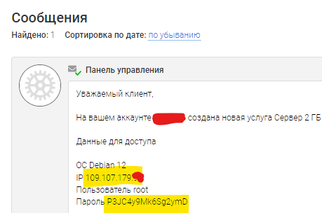
Вам нужны две строки: IP-адрес и root-пароль
Шаг 1: Подключитесь к серверу по SSH:
Пароль можно вставить из буфера с помощью ПКМ, он не отображается для безопасности. Иногда пароль вставляется корректно только при включённой английской раскладке клавиатуры.
Шаг 2: Обновите систему на сервере apt update && apt full-upgrade -y (займёт несколько минут)
Шаг 3: Перезагрузитесь reboot и через минуту подключитесь по ssh заново.
Шаг 4: Установите необходимые пакеты:
apt install docker.io docker-compose git curl bash openssl nano -y
Шаг 5: Установите панель 3X-UI версии v2.0.2:
git clone https://github.com/MHSanaei/3x-ui.git
cd 3x-ui
nano docker-compose.yml
# откроется текстовой редактор.
# в 6 строке замените "latest" на "v2.0.2"
# было: image: ghcr.io/mhsanaei/3x-ui:latest
# стало: image: ghcr.io/mhsanaei/3x-ui:v2.0.2
# чтобы сохранится, нажмите: CTRL+X, Y, ENTER
docker-compose up -d
nano docker-compose.yml
UPD 18.01: Автор панели уже выпустил новую версию, но там поменялся интерфейс и логика работы с WARP, я же создавал инструкцию и делал скриншоты именно с версии v2.0.2, она стабильная и самодостаточная. Если вы ставите прокси первый раз и хотите следовать инструкции - устанавливайте именно эту версию.
В первоначальной инструкции была ошибка - она устанавливала последнюю версию, сейчас всё верно.
Шаг 6: Установите Warp: первой командой - удалите (если он был установлен хостером), второй - установите его в режиме совместимости с 3x-ui
warp u
bash <(curl -sSL https://raw.githubusercontent.com/hamid-gh98/x-ui-scripts/main/install_warp_proxy.sh)
Во время установки скрипт спросит у вас цифру, нужно ответить 40000
Шаг 7: Сгенерируйте самоподписанный TLS-сертификат и скопируйте его в панель 3X-UI
openssl req -x509 -newkey rsa:4096 -nodes -sha256 -keyout private.key -out public.key -days 3650 -subj "/CN=APP"
docker cp private.key 3x-ui:private.key
docker cp public.key 3x-ui:public.key
На этом настройка сервера завершена.
Можно шаманить дальше, чтобы повышать уровень безопасности сервера и качество его маскировки, но «для старта» я считаю это излишним. Минимально необходимые настройки для стабильной работы сервера вы выполнили.
Инструкция (2/6) - первичная настройка панели 3X-UI
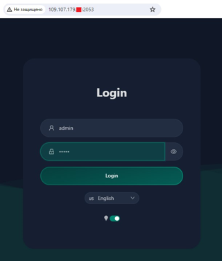
Шаг 1: Откройте браузер и зайдите по адресу вида http://111.111.111.111:2053/ Обратите внимание на http (не https) в начале адреса (но это только на старте, далее будет https). IP, конечно, нужно поменять на свой.
Шаг 2: Поменяйте язык на английский (в русском кривой перевод), тёмную тему, логин: admin, пароль: admin, и войти (кнопка Login).
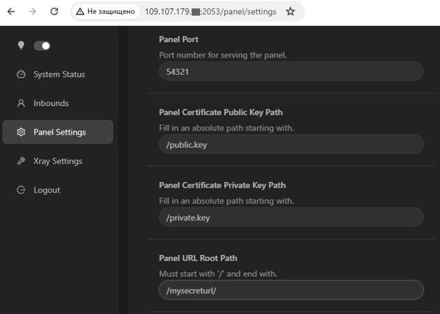
Шаг 3: В разделе "Panel Settings" заполните 4 поля как на скриншоте:
- Panel Port (любое случайное число от 1000 до 65535, кроме 40000 - оно уже занято варпом, в инструкции я буду использовать 54321 - но вы придумайте своё). Далее везде вместо порта 54321 вставляйте своё число.
- Panel Certificate Public Key Path : /public.key
- Panel Certificate Private Key Path : /private.key
- Panel URL Root Path: секретная строка для доступа к панели, которая начинается и заканчивается "/". Я использую /mysecreturl/, но вы придумайте свою. Далее везде вместо строки /mysecreturl/ используйте свою.
Наконец, сохранитесь (кнопка Save вверху страницы) и обязательно перезагрузите панель (кнопка Restart Panel, Sure).
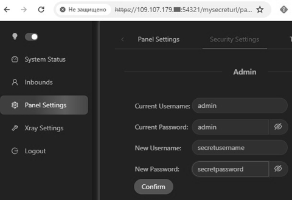
Шаг 4: В разделе Panel Settings -Security Settings укажите старые(admin/admin) и придумайте новые логин и пароль, жмите Confirm.
Шаг 5: Войдите в панель ещё раз с новым логином и паролем.
Теперь панель будет всегда доступна по HTTPS адресу вида: https://111.111.111.111:54321/mysecreturl/ (где IP, Порт и Путь будут вашими собственными).
Сохраните где-нибудь URL доступа к панели, логин и пароль.
Xray - прокси-сервер, которым управляет панель 3X-UI. Именно Xray поддерживает протокол VLESS с маскировкой.
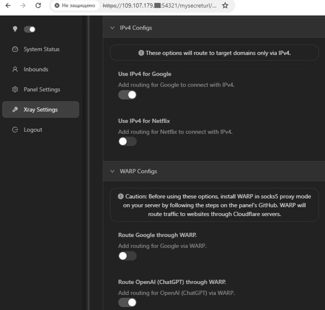
Шаг 1: В панели перейдите в раздел "Xray Settings" и включите две опции:
- IPv4 Configs -> Use IPv4 for Google
- WARP Configs -> Route OpenAI (ChatGPT) througw WARP.
Затем в верху страницы сохранитесь (Save Settings) и перезагрузитесь (Restart Xray)
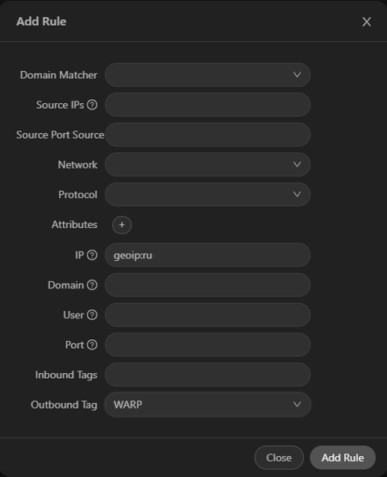
Шаг 2: Пустите весь российский трафик на сервере через WARP.
Для этого перейдите в раздел "Xray Settings"->"Routing Rules", найдите строку где написано "geosite:openai" и отредактируйте её, чтобы получилось: geosite:category-gov-ru,regexp:.*\.ru$,geosite:openai
Наконец, добавьте новое правило через кнопку Add Rule (IP: geoip:ru, Outbound tag: WARP) как на скриншоте.
Опять сохранитесь вверху страницы (Save Settings), затем перезагрузитесь (Restart Xray)
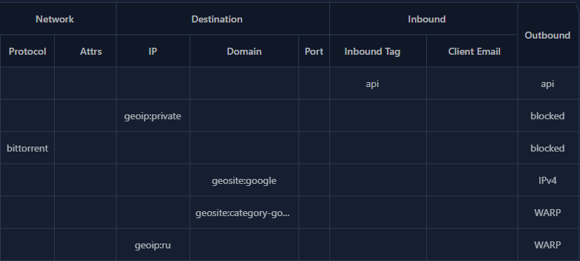
Правильно заполненная таблица "Routing Rules" - ваш пропуск в интернет, товарищ!
Шаг 3: Найдите сайт‑донор для маскировки.
Уже на 4-м шаге панель предложит вам маскироваться под сайт yahoo.com. В принципе он подходит. Но если у вас сервер в Европе — это даст задержки при открытии новых сайтов, поскольку сервера yahoo находятся в Америке.
Оптимальным будет найти сайт в подсети хостера (вот инструкция), но может случиться так, что в подсети сайта не обнаружится (у меня такое было).
Поэтому есть более простой вариант: найти небольшой сайт из той‑же страны, где вы арендовали VPS, затем зайти на сервер по SSH и с сервера попинговать его. Если время отклика будет минимальное (например, 15мс) — он подходит.
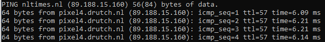
Я арендовал сервер в Нидерландах, поэтому выбрал голландский новостной сайт nltimes.nl - попинговал его с VPS-сервера: вижу время отклика 6мс, он подходит

Шаг 4: Настройте VLESS
В разделе (Inbound) - (Add inbound) надо заполнить указанные на скриншоте поля.
Самое важное:
- Remark и Email - любые строки (не обязательно адрес эл.почты), ни на что не влияют.
- Listening IP - укажите ваш IP
- Port - строго 443, чтобы маскироваться под обычный https-сайт.
- Только после выбора Security: Reality появится возможность выбора Flow: xtls-rprx-vision
- uTLS - именно Chrome, чтобы маскироваться под самый популярный браузер
- Dest, Server Names - указать сайт-донор (хотя можно оставить yahoo.com)
- Кнопка (Get new cert) генерирует ключи.
- (Create) завершает создание.
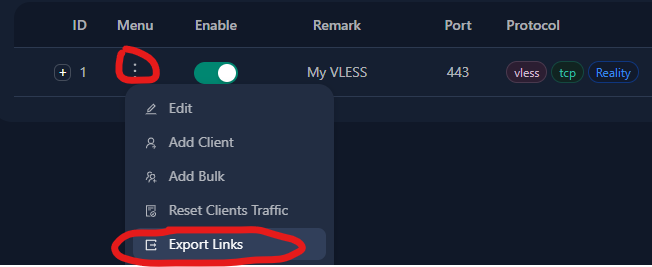
Шаг 5: Получите ключ VLESS
Осталось в разделе Inbounds нажать на (три точки) -> Export Links ...
... и система даст скопировать строку-ключ вида:
vless://e034d537-b028-41f0-9e53-5f0838ea8b3b@111.111.111.111:443?type=tcp&security=reality&pbk=D0Bfsax3Ble2KiqDrOu3_qMJw7qVKyrnWgpvDTVkb3M&fp=chrome&sni=nltimes.nl&sid=64edf3b5&spx=%2F&flow=xtls-rprx-vision#My%20VLESS-Reality
Сохраните её в удобном месте.
Здесь всего три шага:
Приложений много, они есть практически под все платформы, и они проверены временем.
Windows:
Android:
iOS:
macOS:
Лидером среди приложений является Hiddify‑Next от наших иранских коллег.
Основные его плюсы:
Интерфейс настолько простой, что я решил не делать скриншотов.
После установки приложения надо сделать всего две вещи:
Всё! Можно нажимать на огромную круглую кнопку — и прокси заработает!
Особенности Hiddify-Next на Windows:
Приложение может работать в двух режимах:
Большинство приложений (в том числе браузеры) понимает первый режим. Но не все. Если какое‑то приложение на Windows не видит ваш прокси — переключитесь в TUN‑режим (в настройках Hiddify‑Next). Чтобы TUN‑режим заработал, Hiddify‑Next необходимо запустить в «режиме администратора» (программа сама вам об этом скажет).
Особенности Hiddify‑Next на Android:
На андроиде есть супер‑удобная опция «Раздельное проксирование» (в настройках Hiddify‑Next). На iOS такого нет.
Раздельное проксирование позволяет выбрать, какие приложения будут использовать прокси. Например, я могу выбрать опцию «Проксировать только выбранные приложения» и поставить галочки на: «Нельзяграм, Канву и Хром». После включения прокси, только эти три приложения будут использовать прокси, а остальные (банковские приложения, яндекс‑карты и все остальные) продолжат соединяться со своими серверами напрямую.
Если настроить раздельное проксирование для выбранных приложений — прокси на телефоне можно держать включённым постоянно.
Streisand — бесплатное приложение, но в декабре оно на несколько дней становилось платным. Если оно опять станет платным в будущем (~200р) — считаю что оно стоит своих денег.
Итак, всё те же два шага:
Сначала - скопировать эту длинную строку с настройками в буфер.
streisand://aW1wb3J0L3JvdXRlOi8vWW5Cc2FYTjBNRERWQVFJREJBVUdEaGdaR2xWeWRXeGxjMTFrYjIxaGFXNU5ZWFJqYUdWeVZHNWhiV1ZlWkc5dFlXbHVVM1J5WVhSbFozbFVkWFZwWktJSEU5VUlDUW9MREEwT0R4QVNXMjkxZEdKdmRXNWtWR0ZuWFdSdmJXRnBiazFoZEdOb1pYSldaRzl0WVdsdVVtbHdWMjVsZEhkdmNtdFdaR2x5WldOMFZtaDVZbkpwWktDaEVWaG5aVzlwY0RweWRWZDBZM0FzZFdSdzFCUVZDZ3dORGhZU1cyOTFkR0p2ZFc1a1ZHRm5YV1J2YldGcGJrMWhkR05vWlhLaEYxbGtiMjFoYVc0NmNuVlpVbFV0WkdseVpXTjBYRWxRU1daT2IyNU5ZWFJqYUY4UUpFUkROVGxETXpsRExVUXdSRVl0TkRsR015MDVRVEl3TFVFMlJUVkVSakkwUkRaRE9RQUlBQk1BR1FBbkFDd0FPd0JBQUVNQVRnQmFBR2dBYndCeUFIb0FnUUNJQUlrQWl3Q1VBSndBcFFDeEFMOEF3UURMQU5VQTRnQUFBQUFBQUFJQkFBQUFBQUFBQUJzQUFBQUFBQUFBQUFBQUFBQUFBQUVK
Затем — вставить её в приложение через «+» справа‑вверху.
Наконец, зайди в «Роутинг», и там (поставить галочку), (нажать на «включить») и вернуться назад (стрелка слева)
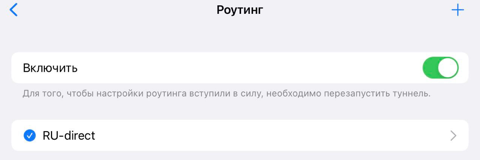
Эффект Streisand: ON
Можно подключаться! (при первом подключении телефон попросит пароль).
Я ограничил инструкцию двумя приложениями, но если вы захотите поэкспериментировать с другими - в конце статьи будут три ссылки где искать доп. информацию.
upd: у меня нет macOS чтобы проверить, но @Spoofi подсказал, что MacOS Hiddify Next на данный момент «не умеет» tun-режим (о tun я писал выше), но это умеет FoxRay.
Если вы всё сделали по инструкции — у вас на устройствах уже должен быть работающий прокси. Но выполняет ли он свою функцию? Не обманул ли продавец VPS? Сейчас проверим.
Если что‑то пошло не так:
Запасной план:
Если какой‑либо западный сайт не пускает вас к себе через VPS, то в качестве костыля можно пустить трафик до этого сайта через WARP.
Для этого в панели 3x-ui->Xray Settings->Routing Rules нужно найти и отредактировать строку geosite:category-gov-ru,regexp:.*\.ru$,geosite:openai - дописать сайты через запятую, пример geosite:category-gov-ru,regexp:.*\.ru$,geosite:openai,intel.com,canva.com (обязательно сохраните изменения и перезагрузите Xray)
После этого западные сайты вместо IP вашего VPS будут видеть IP сети WARP, что почти наверняка позволит обойти их цензуру.
Да, покупка IP‑адреса — это всегда лотерея и есть небольшой шанс проблем, но чаще всего всё работает с первого раза.
Переходим к последнему, самому интересному разделу.
Любое управление рисками сводится к трём шагам:
Хотя я не верю, что - с принятой предосторожностью - сервер вообще может быть когда-либо заблокирован, но обычно реальность не интересуется нашими верованиями.
Проксирование через CDN - это и есть "План Б". Сейчас вы настроите ещё одно, запасное соединение, которое будет работать, даже если ваш VPS станет недоступен изнутри РФ.
Шаг 1: Выберите продавца доменного имени и убедитесь что доменное имя свободно (см. Теория ч2), но НЕ ПОКУПАЙТЕ его пока. CloudFlare работает только с доменными именами второго уровня (есть исключения, но они нам не помогут). Доменное имя второго уровня — это имя с одной точкой, вроде mypersonalsite.com или myhabraproxy.ru.
Для этой инструкции я выбрал доменное имя habraproxy.store у продавца Dreamhost. Прямо сейчас dreamhost бесплатно раздаёт доменные имена.store на 1 год — но эта халява только для клиентов, которые в прошлом что‑то уже покупали.
Кстати, если у вас уже есть свой сайт с доменом...
Итак, продавец выбран, доменное имя выбрано но не куплено, идём дальше.
Шаг 2: Зарегистрируйтесь на CloudFlare.com (Sign Up — Тариф Free — Add Website — e‑mail+пароль). Сохраните пароль, подтвердите аккаунт по ссылке из письма.
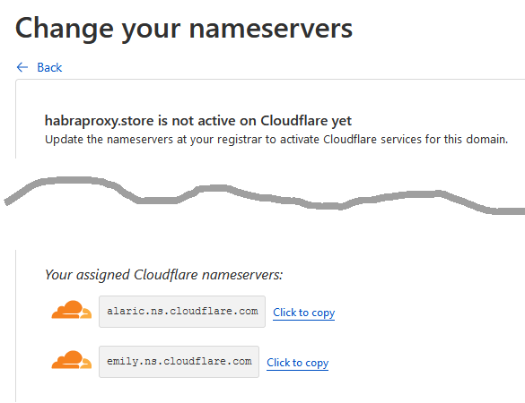
Шаг 3: Зайдите в CloudFlare, в верхнем разделе "Websites" добавьте ещё не купленное доменное имя. Далее - Тариф Free - Continue... пока наконец вы не попадёте на страницу "Change your nameservers" с двумя оранжевыми облаками.
Эти две строки нам понадобятся. Ваши строки могут отличаться от моих.

Мы пойдём другим путём
Шаг 4: Теперь смело покупайте ваше доменное имя, а во время покупки укажите, что будете использовать name-сервера свои, а не те что предлагает продавец. Впишите эти две строки и завершите покупку.
На скриншоте - сайт моего продавца.
Итак, вы купили домен и указали нужные неймсервера. Активация свежекупленного домена займёт несколько минут, самое время донастроить CloudFlare.
Шаг 6: В разделе DNS создайте A‑запись для вашего домена и IP вашего сервера. У меня это выглядит вот так:
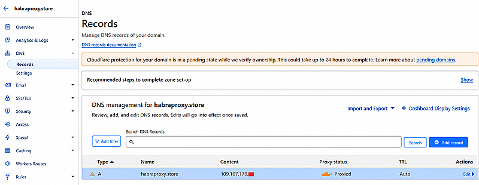
Шаг 7: В разделе Network включите "gRPC" (обойдусь без скриншота).
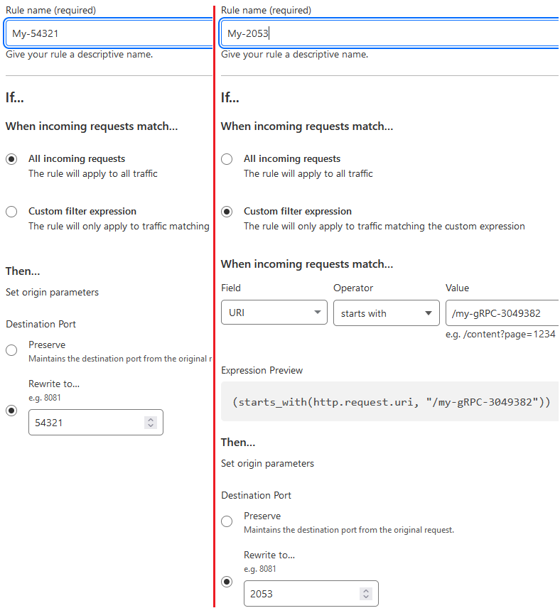
Шаг 8: В разделе Rules->Origin Rules создайте два правила:
(1) Все запросы на сервер направляйте на порт 54321 (укажите порт, на котором работает ваша панель 3xui)
(2) Все запросы по секретному адресу /my-gRPC-3049382 (придумайте что-то своё) направляйте на порт 2053
Последовательность этих двух правил важна.
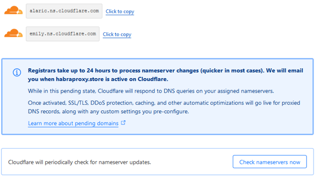
Нажми на кнопку - получишь результат!
Шаг 9: Вернитесь на Overview, и если под оранжевыми облаками найдёте кнопку "Check nameservers now" - нажмите её, чтобы поторопить систему.
(если прошло много времени и там нет ни облаков, ни кнопки - вообще отлично, переходите к следующему шагу)
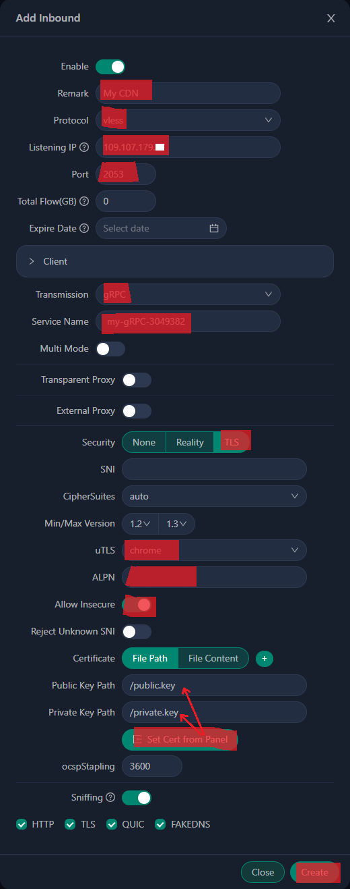
Шаг 9¾: Создайте второе VLESS-подключение для CDN.
Вернитесь в панель 3X-UI. Inbound -Add Inbound
Самое важное:
- Порт - тот же, что и во "втором правиле". 2053 или любой другой на ваш выбор (но смысла менять его на другой не вижу).
- Transmission - gRPC, именно такой тип соединения безлимитен на CloudFlare.
- Service name - секретная строка из "второго правила" my-gRPC-3049382, но строго без "/" в начале.
- uTLS - именно Chrome, чтобы маскироваться под самый популярный браузер
- ALPN сделайте пустым.
- Кнопка (Get Сert from Panel) вписывает ключи.
- Allow Insecure - включайте на время тестирования, когда начнёте пользоваться CDN - можно будет выключить.
Наконец, проверяйте что получилось. Экспортируйте строку-ключ этого нового соединения и скопируйте её в приложение - прокси должен работать. (пока это не CDN, вы лишь подключились к своему VPS через порт 2053 по протоколу VLESS-gRPC, но скоро вместо вас это будет делать CloudFlare)
Шаг 10: Финальная настройка CloudFlare.
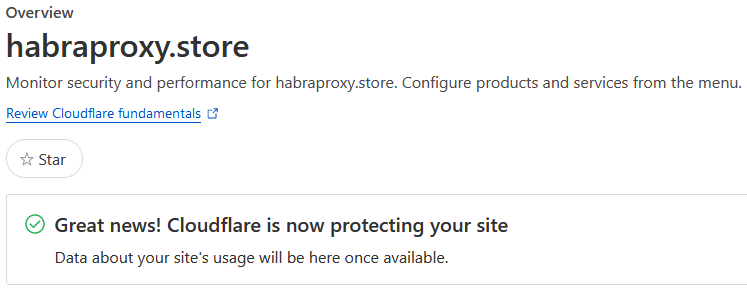
Каково это, быть избранным?
Обновите раздел Overview.
CloudFlare должен вас обрадовать сообщением: "Great news! Cludflare is now protecting your site"
Если этого сообщения нет, а вместо него - страница, на которой остались два оранжевых облака - значит одно из двух:
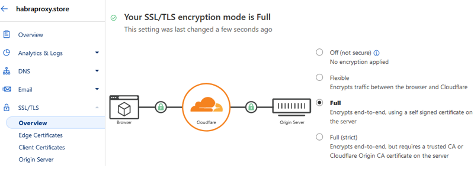
Доквантовая криптография, скриншот начала 21 века
Если всё так, тогда: в разделе SSL/TLS включите режим Full
Теперь вы точно завершили настройку CloudFlare.
Шаг 11: Проверка.
Откройте браузер и перейдите по адресу https://habraproxy.store/mysecreturl/ (меняйте имя сайта на своё, и адрес страницы на свой - тот что установили для панели 3x-ui).
Откроется панель 3x-ui. Теперь управлять панелью вы будете с этого адреса!
Сохраните этот адрес где-нибудь.
Шаг 12: Ещё одна проверка.
Откройте браузер по адресу https://habraproxy.store и убедитесь, что там пустая страница 404.
Это значит любой цензор, зайдя на ваш сайт, убедится: там есть настоящий веб-сервер. В качестве веб-сервера выступает сама панель 3x-ui, которая отдаёт 404 ошибку на любой неизвестный ей адрес. Никакой внешний наблюдатель не узнает адрес панели (/secreturl/). А если цензор послушает трафик, то увидит зашифрованный поток gRPC, который используется для обслуживания веб-приложений по всему интернету.
Шаг 13: Настало время МАГИИ:
Отредактируйте строку-ключ второго подключения:
Было: vless://03684ba0-1994-4106-86da-e91fdd9007e0@111.111.111.111:2053?type=grpc&serviceName=my-gRPC-3049382&security=tls&fp=chrome&alpn=&allowInsecure=1#My%20CDN-tjo1gifl
Стало: vless://03684ba0-1994-4106-86da-e91fdd9007e0@habraproxy.store:443?type=grpc&serviceName=my-gRPC-3049382&security=tls&fp=chrome&alpn=&#My%20CDN
Наконец, копируйте эту строку в приложение, проверяйте работоспособность и наслаждайтесь запасным каналом для своего прокси.
Самое время процитировать @MiraclePtr:
Fair use
Понятное дело, что то, что CDN разрешают на своих бесплатных тарифах проксировать Websockets и gRPC — это такой жест доброй воли от них. Давайте не наглеть и использовать эти возможности только в совсем безвыходных случаях, которые, надеюсь, все‑таки не наступят.
Безусловно, купить VPN за 100 рублей в месяц намного проще, чем впервые в жизни настроить «вот это всё». Я не строю иллюзий, что «все домохозяйки в стране сделают прокси частью своего хозяйства». Это решение — для небольшого числа людей, которые очень ценят свободу информации, очень ценят надёжность и готовы инвестировать своё внимание во всякое «технарское колдунство».
Uptime бюджетного VPS — примерно 99.9% (бывает и выше, и ниже). Это значит, что примерно 42 минуты в месяц VPS может быть недоступен (иногда эти минуты растягиваются до часов и даже дней). То есть вы гарантированно однажды встретитесь с ситуацией, когда VPS временно не отвечает ни по IP, ни через CDN. Причин множество, я встречался как минимум с этими тремя: факап хостера, DDOS‑атака на хостера, проблемы в дата‑центре где физически находится VPS (на которые сам хостер повлиять не может).
Я решаю этот вопрос просто — у меня два сервера от разных хостерах в разных странах (основной и запасной), этого хватает.
Другое решение — на случай форс‑мажора иметь под рукой запасную строку‑ключ (shadowsocks, vless, trojan) от какого‑нибудь бесплатного сервиса, благо в телеграмме их полно. Конечно, передавать свой трафик через бесплатный сервис — это стрёмно, но если VPS недоступен, а доступ нужен срочно, то временное использование бесплатного сервиса может оказаться приемлемым, решайте сами.
Хотя и сервер, и клиенты — это opensource приложения (основанные на Xray и SingBox), они не проходили независимый аудит, и теоретически там могут быть ошибки, а разработчики — тоже теоретически — могут добавить зловредный код в новые версии (впрочем, такое можно сказать про любое opensource‑решение, но это не мешает существованию опенсорса в мире). Один из вариантов управления этим риском — использовать проверенные версии клиентских и серверных приложений. Пользуясь компьютером и телефоном вы уже доверяете сотням людей и корпораций. Если эти opensource‑решения не вызывают у вас доверия — стоит поискать другие. Я же не вижу здесь никакой проблемы, лишь озвучиваю существующее мнение.
Да, моё решение использует XTLS только для соединения с сервером напрямую, и простой TLS для проксирования через CDN. Я не нашёл способа простой настройки XTLS через CDN, но всё же это возможно. В конце статьи будут ссылки с решением. В РФ пока не умеют детектировать шифрование уже зашифрованного трафика (tls‑in‑tls), но если научатся — это может быть потенциальной проблемой, хотя я оцениваю этот шанс как стремящийся к нулю.
Да, использование прокси заметно повышает уровень анонимности в интернете, но ни один прокси не гарантирует абсолютной анонимности. Данное решение не заточено на анонимность, а для свободного доступа к информации. Пожалуйста, не путайте доступ к информации и анонимность, это очень разные задачи.
Я постарался сделать эту статью исчерпывающей и самодостаточной, чтобы своими руками настроить личный прокси‑сервер
Но на тот случай, если вы захотите разобраться в вопросе глубже — рекомендую эти три статьи, в которых я черпал вдохновение, и которые содержат дополнительные технические детали и нюансы: